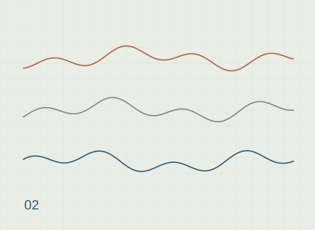

<!DOCTYPE html>
<html lang="en"><head><meta charset="UTF-8"><meta name="viewport" content="width=device-width, initial-scale=1.0"><meta name="description" content="I studied whether smartphone accelerometer and gyroscope signals could classify twelve activities and postural transitions."><meta name="theme-color" content="#f8f4ea"><title>Recognising human activity — Laura Maria Fetz</title><link rel="icon" href="../../favicon.svg" type="image/svg+xml"><link rel="preconnect" href="https://fonts.googleapis.com"><link rel="preconnect" href="https://fonts.gstatic.com" crossorigin><link href="https://fonts.googleapis.com/css2?family=Manrope:wght@400;500;600;700&amp;family=DM+Mono:wght@400;500&amp;display=swap" rel="stylesheet"><link rel="stylesheet" href="../../tooplate-ivory-style.css"><link rel="stylesheet" href="../../personal.css"><link rel="stylesheet" href="../../project.css"></head>
<body class="project-page"><a class="skip-link" href="#main">Skip to content</a><a class="site-mark" href="../../index.html#home" aria-label="Laura Maria Fetz, home">LF<span>.</span></a><nav class="pill-nav" aria-label="Main navigation"><a href="../../index.html#home">Home</a><a href="../../index.html#projects" class="active" aria-current="location">Projects</a><a href="../../index.html#contact">Contact</a></nav><button class="hamburger" aria-label="Open navigation" aria-expanded="false" aria-controls="mobile-navigation"><span></span><span></span><span></span></button><nav class="mobile-nav" id="mobile-navigation" aria-label="Mobile navigation" hidden><a href="../../index.html#home">Home</a><a href="../../index.html#projects" class="active" aria-current="location">Projects</a><a href="../../index.html#contact">Contact</a></nav>
<main id="main"><header class="project-hero"><div class="project-heading"><a href="../../index.html#projects" class="project-back">← All projects</a><p class="section-eyebrow">Machine learning · R</p><h1>Recognising human activity</h1><p class="project-deck">I studied whether smartphone accelerometer and gyroscope signals could classify twelve activities and postural transitions.</p><div class="project-hero-actions"><a class="cta-link" href="#notebook">Read the notebook <span aria-hidden="true">↓</span></a><a class="cta-link cta-link--dark" href="https://github.com/laurafetz/Human-Activity-Recognition" target="_blank" rel="noopener noreferrer">Source on GitHub <span aria-hidden="true">↗</span></a></div></div></header>
<div class="project-reading-layout"><aside class="project-contents" aria-label="On this page"><p>On this page</p><nav><a href="#overview">Project overview</a><a href="#overview-results">Results</a><a href="#overview-limitations">Limitations</a><a href="#overview-credits">Credits</a><a class="toc-notebook" href="#notebook">Original notebook</a></nav></aside><article class="project-document"><section class="project-reader-section" id="overview"><div class="reader-section-heading"><div><p class="section-eyebrow">The question, methods &amp; findings</p><h2>Project overview</h2></div><span class="reader-badge">Research notes</span></div><div class="project-prose"><p>I studied whether smartphone accelerometer and gyroscope signals could classify twelve activities and postural transitions. I worked with a course version of a dataset from 30 volunteers aged 19–48, recorded at 50 Hz. I extracted time- and frequency-domain features from 128-sample epochs and compared four classifiers with ten-fold cross-validation. Multinomial logistic regression had the highest accuracy in the original notebook: 89.21%.</p>
<h2 id="overview-results">Results</h2>
<table>
<thead>
<tr>
<th>Classifier</th>
<th>Best epoch-level CV accuracy</th>
</tr>
</thead>
<tbody><tr>
<td>Multinomial logistic regression</td>
<td>89.21%</td>
</tr>
<tr>
<td>Scaled KNN</td>
<td>87.57%</td>
</tr>
<tr>
<td>LDA</td>
<td>86.68%</td>
</tr>
<tr>
<td>KNN</td>
<td>74.45%</td>
</tr>
</tbody></table>
<p>The table comes from <a href="https://github.com/laurafetz/Human-Activity-Recognition/blob/main/results/original_model_comparison.csv" target="_blank" rel="noopener noreferrer">original_model_comparison.csv</a>. I retain the original notebook and <a href="https://github.com/laurafetz/Human-Activity-Recognition/blob/main/results/original_cv_details.csv" target="_blank" rel="noopener noreferrer">tuning results</a>. These are the original coursework results; I have not rerun the full comparison with the current script.</p>
<h2 id="overview-limitations">Limitations</h2>
<p>Epochs from the same person can enter different folds, so the reported accuracy does not estimate performance on unseen people. I filtered predictors before cross-validation, which may inflate the estimates. The withheld test labels prevent me from reporting test accuracy.</p>
<h2 id="overview-credits">Credits</h2>
<p>I worked on this project with <strong>Yuxuan Xiang</strong>. Project authors: <strong>Laura Maria Fetz</strong> and <strong>Yuxuan Xiang</strong>. We shared feature extraction and model selection; I wrote the notebook text and prepared its layout and figures. The dataset documentation in <a href="https://github.com/laurafetz/Human-Activity-Recognition/blob/main/data/README.txt" target="_blank" rel="noopener noreferrer">data/README.txt</a> credits Jorge L. Reyes-Ortiz, Davide Anguita, Luca Oneto, Xavier Parra, and collaborators.</p>
</div><p class="source-note">From the <a href="https://github.com/laurafetz/Human-Activity-Recognition/blob/main/README.md" target="_blank" rel="noopener noreferrer">project documentation</a>. <a href="downloads/project-overview.md" download>Download the overview</a>.</p></section><section class="project-reader-section" id="notebook"><div class="reader-section-heading"><div><p class="section-eyebrow">Read the analysis</p><h2>Original notebook</h2></div><span class="reader-badge">R · 68 cells</span></div><p class="reader-note">This is the original coursework notebook, including its saved outputs.</p><div class="notebook-toolbar"><button class="reader-button" id="toggle-code" type="button" aria-pressed="false" hidden>Hide all code</button><a class="reader-button reader-button-secondary" href="downloads/notebook.ipynb" download>Download notebook <span aria-hidden="true">↓</span></a></div><div class="notebook-document"><div class="notebook-markdown" data-cell="1"><h3 id="notebook-1-human-activity-recognition">Human activity recognition</h3>
<p>I classified twelve activities and postural transitions from smartphone accelerometer and gyroscope signals. The dataset contains thirty volunteers aged 19–48, measured at 50 Hz. This is my original coursework notebook. The README reports the original CV results.</p>
<p>Project authors: Laura Maria Fetz and Yuxuan Xiang.</p>
</div><div class="notebook-cell" data-cell="2"><details class="notebook-code" open><summary>R code <span>Cell 02</span></summary><pre><code># Loading packages
library(tidyverse) 
library(dplyr)
library(readr)
library(caret)
library(nnet)

# Creating a path to the files
list.files(path = &quot;../input&quot;) 

# Coping all files to the working directory
system(paste0(&quot;cp -r &quot;, list.files(&quot;../input&quot;, pattern = &quot;recognition&quot;, full.names=TRUE), &quot;/* ./&quot;))

# List files in the current working directory
list.files()</code></pre></details><div class="notebook-output"><span class="output-label">Saved output</span>&#x27;physical-activity-recognition-bda-2023&#x27;</div><div class="notebook-output"><span class="output-label">Saved output</span>
<ol class="list-inline"><li>&#x27;activity_labels.txt&#x27;</li><li>&#x27;example_submission.csv&#x27;</li><li>&#x27;RawData&#x27;</li><li>&#x27;README.txt&#x27;</li><li>&#x27;Rplot001.png&#x27;</li></ol>
</div></div><div class="notebook-markdown" data-cell="3"><h3 id="notebook-3-read-the-data">Read the data</h3>
<p>I read the activity definitions and training segment labels.</p>
</div><div class="notebook-cell" data-cell="4"><details class="notebook-code" open><summary>R code <span>Cell 04</span></summary><pre><code># Read the text file containing the activity labels
act_labels = read_delim(&quot;activity_labels.txt&quot;,&quot; &quot;,col_names=FALSE,trim_ws=TRUE) 
act_labels = act_labels %&gt;% select(X1,X2)
act_labels</code></pre></details><div class="notebook-output"><span class="output-label">Saved output</span><pre>Warning message:
“One or more parsing issues, call `problems()` on your data frame for details,
e.g.:
  dat &lt;- vroom(...)
  problems(dat)”
Rows: 12 Columns: 13
── Column specification ────────────────────────────────────────────────────────
Delimiter: &quot; &quot;
chr  (1): X2
dbl  (1): X1
lgl (11): X3, X4, X5, X6, X7, X8, X9, X10, X11, X12, X13

ℹ Use `spec()` to retrieve the full column specification for this data.
ℹ Specify the column types or set `show_col_types = FALSE` to quiet this message.
</pre></div><div class="notebook-output"><span class="output-label">Saved output</span><table class="dataframe">
<caption>A tibble: 12 × 2</caption>
<thead>
	<tr><th>X1</th><th>X2</th></tr>
	<tr><th>&lt;dbl&gt;</th><th>&lt;chr&gt;</th></tr>
</thead>
<tbody>
	<tr><td> 1</td><td>WALKING           </td></tr>
	<tr><td> 2</td><td>WALKING_UPSTAIRS  </td></tr>
	<tr><td> 3</td><td>WALKING_DOWNSTAIRS</td></tr>
	<tr><td> 4</td><td>SITTING           </td></tr>
	<tr><td> 5</td><td>STANDING          </td></tr>
	<tr><td> 6</td><td>LAYING            </td></tr>
	<tr><td> 7</td><td>STAND_TO_SIT      </td></tr>
	<tr><td> 8</td><td>SIT_TO_STAND      </td></tr>
	<tr><td> 9</td><td>SIT_TO_LIE        </td></tr>
	<tr><td>10</td><td>LIE_TO_SIT        </td></tr>
	<tr><td>11</td><td>STAND_TO_LIE      </td></tr>
	<tr><td>12</td><td>LIE_TO_STAND      </td></tr>
</tbody>
</table>
</div></div><div class="notebook-markdown" data-cell="5"><h4 id="notebook-5-sample-labels">Sample labels</h4>
<p>I use each segment’s start and end indices to label the raw sensor samples.</p>
</div><div class="notebook-cell" data-cell="6"><details class="notebook-code" open><summary>R code <span>Cell 06</span></summary><pre><code># Loading the signals from the training data and adding column names
labels = read_delim(&quot;./RawData/Train/labels_train.txt&quot;, &quot; &quot;, col_names = F)
colnames(labels) &lt;- c(&#x27;trial&#x27;, &#x27;userid&#x27;, &#x27;activity&#x27;, &#x27;start&#x27;, &#x27;end&#x27;)

# Matching the labels with the activites
labels = labels %&gt;% mutate(activity = act_labels$X2[activity])

# Look at our new dataframe
print(labels)</code></pre></details><div class="notebook-output"><span class="output-label">Saved output</span><pre>Rows: 849 Columns: 5
── Column specification ────────────────────────────────────────────────────────
Delimiter: &quot; &quot;
dbl (5): X1, X2, X3, X4, X5

ℹ Use `spec()` to retrieve the full column specification for this data.
ℹ Specify the column types or set `show_col_types = FALSE` to quiet this message.
</pre></div><div class="notebook-output"><span class="output-label">Saved output</span><pre># A tibble: 849 × 5
   trial userid activity     start   end
   &lt;dbl&gt;  &lt;dbl&gt; &lt;chr&gt;        &lt;dbl&gt; &lt;dbl&gt;
 1     1      1 STANDING       250  1232
 2     1      1 STAND_TO_SIT  1233  1392
 3     1      1 SITTING       1393  2194
 4     1      1 SIT_TO_STAND  2195  2359
 5     1      1 STANDING      2360  3374
 6     1      1 STAND_TO_LIE  3375  3662
 7     1      1 LAYING        3663  4538
 8     1      1 LIE_TO_SIT    4539  4735
 9     1      1 SITTING       4736  5667
10     1      1 SIT_TO_LIE    5668  5859
# ℹ 839 more rows
</pre></div></div><div class="notebook-markdown" data-cell="7"><p>I keep the participant, trial, and activity identifiers when expanding the segment labels.</p>
</div><div class="notebook-cell" data-cell="8"><details class="notebook-code" open><summary>R code <span>Cell 08</span></summary><pre><code># Add the sequence start:end to each row in a list, creating a nester tibble
sample_labels_nested = 
    labels %&gt;% 
    rowwise() %&gt;% # do next operation(s) rowwise
    mutate(sampleid = list(start:end)) %&gt;%
    ungroup()

# Check the resulting table
print(sample_labels_nested)</code></pre></details><div class="notebook-output"><span class="output-label">Saved output</span><pre># A tibble: 849 × 6
   trial userid activity     start   end sampleid     
   &lt;dbl&gt;  &lt;dbl&gt; &lt;chr&gt;        &lt;dbl&gt; &lt;dbl&gt; &lt;list&gt;       
 1     1      1 STANDING       250  1232 &lt;int [983]&gt;  
 2     1      1 STAND_TO_SIT  1233  1392 &lt;int [160]&gt;  
 3     1      1 SITTING       1393  2194 &lt;int [802]&gt;  
 4     1      1 SIT_TO_STAND  2195  2359 &lt;int [165]&gt;  
 5     1      1 STANDING      2360  3374 &lt;int [1,015]&gt;
 6     1      1 STAND_TO_LIE  3375  3662 &lt;int [288]&gt;  
 7     1      1 LAYING        3663  4538 &lt;int [876]&gt;  
 8     1      1 LIE_TO_SIT    4539  4735 &lt;int [197]&gt;  
 9     1      1 SITTING       4736  5667 &lt;int [932]&gt;  
10     1      1 SIT_TO_LIE    5668  5859 &lt;int [192]&gt;  
# ℹ 839 more rows
</pre></div></div><div class="notebook-markdown" data-cell="9"><p>I unnest the sample indices. I keep a segment identifier to distinguish repeated bouts of the same activity.</p>
</div><div class="notebook-cell" data-cell="10"><details class="notebook-code" open><summary>R code <span>Cell 10</span></summary><pre><code># Unnest the nested tabel.
sample_labels = 
    sample_labels_nested %&gt;% 

    # Rows are segments, we need to keep track of different segements
    mutate(segment = row_number() ) %&gt;% 

    # Expand the data frame to one sample per row
    unnest(cols = c(sampleid)) %&gt;% 

    # Remove columns we don&#x27;t need anymore
    select(-start, -end) 

# Check the result (first few rows are not interesting; rows 977-990 are)
print(sample_labels[0:1000, ])</code></pre></details><div class="notebook-output"><span class="output-label">Saved output</span><pre># A tibble: 1,000 × 5
   trial userid activity sampleid segment
   &lt;dbl&gt;  &lt;dbl&gt; &lt;chr&gt;       &lt;int&gt;   &lt;int&gt;
 1     1      1 STANDING      250       1
 2     1      1 STANDING      251       1
 3     1      1 STANDING      252       1
 4     1      1 STANDING      253       1
 5     1      1 STANDING      254       1
 6     1      1 STANDING      255       1
 7     1      1 STANDING      256       1
 8     1      1 STANDING      257       1
 9     1      1 STANDING      258       1
10     1      1 STANDING      259       1
# ℹ 990 more rows
</pre></div></div><div class="notebook-markdown" data-cell="11"><h4 id="notebook-11-accelerometer-recordings">Accelerometer recordings</h4>
<p>I first inspect participant 1, trial 1. Acceleration is measured in units of g.</p>
</div><div class="notebook-cell" data-cell="12"><details class="notebook-code" open><summary>R code <span>Cell 12</span></summary><pre><code># Identify the file name and extract the &#x27;username&#x27; (participant ID) and &#x27;expname&#x27; (experimental trial)
filename_acc = &quot;RawData/Train/acc_exp01_user01.txt&quot;
username = gsub(&quot;.+user(\\d+).+&quot;, &quot;\\1&quot;, filename_acc) %&gt;% as.integer()
expname  = gsub(&quot;.+exp(\\d+).+&quot;, &quot;\\1&quot;, filename_acc) %&gt;% as.integer()

# Import the data from the file
acc_data = read.delim(filename_acc, &quot; &quot;, header = FALSE) %&gt;%
  setNames(c(&quot;X1&quot;, &quot;X2&quot;, &quot;X3&quot;))

# Creating a plot
options(repr.plot.width=20)
plot.ts(acc_data, xlab=&quot;Sample number&quot;)</code></pre></details></div><div class="notebook-markdown" data-cell="13"><h4 id="notebook-13-gyroscope-recordings">Gyroscope recordings</h4>
<p>I inspect the matching angular-velocity recording. Its values are measured in radians per second.</p>
</div><div class="notebook-cell" data-cell="14"><details class="notebook-code" open><summary>R code <span>Cell 14</span></summary><pre><code># Identify the file name and extract the &#x27;username&#x27; (participant ID) and &#x27;expname&#x27; (experimental trial)
filename_gyro = &quot;RawData/Train/gyro_exp01_user01.txt&quot;
username = gsub(&quot;.+user(\\d+).+&quot;, &quot;\\1&quot;, filename_gyro) %&gt;% as.integer()
expname  = gsub(&quot;.+exp(\\d+).+&quot;, &quot;\\1&quot;, filename_gyro) %&gt;% as.integer()

# Read gyro_data and give names to variables
gyro_data &lt;- read.delim(filename_gyro, &quot; &quot;, header = FALSE) %&gt;%
  setNames(c(&quot;X1&quot;, &quot;X2&quot;, &quot;X3&quot;))

# Creating a plot
options(repr.plot.width=20)
plot.ts(gyro_data, xlab=&quot;Sample number&quot;)</code></pre></details></div><div class="notebook-markdown" data-cell="15"><h4 id="notebook-15-merge-recordings-and-labels">Merge recordings and labels</h4>
<p>I join the sample labels to the accelerometer and gyroscope measurements.</p>
</div><div class="notebook-cell" data-cell="16"><details class="notebook-code" open><summary>R code <span>Cell 16</span></summary><pre><code># Combine accelometer and gyroscope data
combined_data &lt;- cbind(acc_data, gyro_data)

# Store signals of the first participant for both acc and gyro data in a data frame, with &#x27;userid&#x27; and &#x27;trial&#x27;
user_df = 
    data.frame(userid = username, trial = expname, combined_data) %&gt;%
    mutate(sampleid = 0:(nrow(combined_data)-1) ) %&gt;%
    left_join(sample_labels) 

# Check the result (first few rows are not interesting; the following are)
print(user_df[1227:1239, ])</code></pre></details><div class="notebook-output"><span class="output-label">Saved output</span><pre>Joining with `by = join_by(userid, trial, sampleid)`
</pre></div><div class="notebook-output"><span class="output-label">Saved output</span><pre>     userid trial       X1         X2         X3         X1.1        X2.1
1227      1     1 1.022222 -0.1375000 0.07500000 -0.007941248 0.001832596
1228      1     1 1.019445 -0.1347222 0.07361111 -0.014355334 0.011301007
1229      1     1 1.022222 -0.1375000 0.07777778 -0.015271631 0.014966198
1230      1     1 1.025000 -0.1375000 0.07638889 -0.013133603 0.041844271
1231      1     1 1.030556 -0.1444445 0.07916667 -0.034819320 0.076663591
1232      1     1 1.016667 -0.1430556 0.05833334 -0.006108652 0.032986723
1233      1     1 1.015278 -0.1416667 0.05972222  0.031459559 0.003359759
1234      1     1 1.020833 -0.1638889 0.05555556  0.072998397 0.033903021
1235      1     1 1.027778 -0.1736111 0.06944445  0.103847094 0.064140849
1236      1     1 1.025000 -0.1638889 0.05833334  0.103847094 0.045204028
1237      1     1 1.022222 -0.1472222 0.04861111  0.130114302 0.033292156
1238      1     1 1.022222 -0.1597222 0.04305556  0.192727983 0.013744468
1239      1     1 1.027778 -0.1625000 0.04861111  0.226631001 0.059253927
             X3.1 sampleid     activity segment
1227  0.008246681     1226     STANDING       1
1228  0.010995574     1227     STANDING       1
1229  0.007024950     1228     STANDING       1
1230  0.021991149     1229     STANDING       1
1231  0.022602014     1230     STANDING       1
1232  0.009773844     1231     STANDING       1
1233  0.014966198     1232     STANDING       1
1234 -0.003054326     1233 STAND_TO_SIT       2
1235  0.005192355     1234 STAND_TO_SIT       2
1236  0.012828170     1235 STAND_TO_SIT       2
1237  0.012828170     1236 STAND_TO_SIT       2
1238  0.014966198     1237 STAND_TO_SIT       2
1239  0.007635816     1238 STAND_TO_SIT       2
</pre></div></div><div class="notebook-markdown" data-cell="17"><h5 id="notebook-17-accelerometer-plot">Accelerometer plot</h5>
<p>I plot the three acceleration channels against the activity labels.</p>
</div><div class="notebook-cell" data-cell="18"><details class="notebook-code" open><summary>R code <span>Cell 18</span></summary><pre><code># Set plot width options for the visualization
options(repr.plot.width=20) 

# Create a ggplot visualization using user_df data
user_df %&gt;%
  ggplot(aes(x = sampleid, y = X1, col = factor(activity), group = segment)) + 

# Add a line plot to the ggplot visualization
  geom_line()</code></pre></details></div><div class="notebook-markdown" data-cell="19"><h5 id="notebook-19-gyroscope-plot">Gyroscope plot</h5>
<p>I plot the three angular-velocity channels against the same labels.</p>
</div><div class="notebook-cell" data-cell="20"><details class="notebook-code" open><summary>R code <span>Cell 20</span></summary><pre><code># Set plot width options for the visualization
options(repr.plot.width=20) 

# Create a ggplot visualization using user_df data
user_df %&gt;%
  ggplot(aes(x = sampleid, y = X1.1, col = factor(activity), group = segment)) + 

# Add a line plot to the ggplot visualization
  geom_line()</code></pre></details></div><div class="notebook-markdown" data-cell="21"><h3 id="notebook-21-extract-features">Extract features</h3>
<p>I divide the labelled signals into 128-sample epochs, about 2.56 seconds each.</p>
</div><div class="notebook-cell" data-cell="22"><details class="notebook-code" open><summary>R code <span>Cell 22</span></summary><pre><code># Split data into epochs and add epoch ID
user_df %&gt;%
  mutate(epoch = sampleid %/% 128) %&gt;% 
  group_by(epoch) %&gt;%
  head(5)</code></pre></details><div class="notebook-output"><span class="output-label">Saved output</span><table class="dataframe">
<caption>A grouped_df: 5 × 12</caption>
<thead>
	<tr><th>userid</th><th>trial</th><th>X1</th><th>X2</th><th>X3</th><th>X1.1</th><th>X2.1</th><th>X3.1</th><th>sampleid</th><th>activity</th><th>segment</th><th>epoch</th></tr>
	<tr><th>&lt;dbl&gt;</th><th>&lt;dbl&gt;</th><th>&lt;dbl&gt;</th><th>&lt;dbl&gt;</th><th>&lt;dbl&gt;</th><th>&lt;dbl&gt;</th><th>&lt;dbl&gt;</th><th>&lt;dbl&gt;</th><th>&lt;int&gt;</th><th>&lt;chr&gt;</th><th>&lt;int&gt;</th><th>&lt;dbl&gt;</th></tr>
</thead>
<tbody>
	<tr><td>1</td><td>1</td><td>0.9180556</td><td>-0.11250000</td><td>0.5097223</td><td>-0.05497787</td><td>-0.06963864</td><td>-0.030848695</td><td>0</td><td>NA</td><td>NA</td><td>0</td></tr>
	<tr><td>1</td><td>1</td><td>0.9111111</td><td>-0.09305556</td><td>0.5375000</td><td>-0.01252274</td><td> 0.01924226</td><td>-0.038484510</td><td>1</td><td>NA</td><td>NA</td><td>0</td></tr>
	<tr><td>1</td><td>1</td><td>0.8819445</td><td>-0.08611111</td><td>0.5138889</td><td>-0.02351831</td><td> 0.27641651</td><td> 0.006414085</td><td>2</td><td>NA</td><td>NA</td><td>0</td></tr>
	<tr><td>1</td><td>1</td><td>0.8819445</td><td>-0.08611111</td><td>0.5138889</td><td>-0.09346239</td><td> 0.36774087</td><td> 0.001221730</td><td>3</td><td>NA</td><td>NA</td><td>0</td></tr>
	<tr><td>1</td><td>1</td><td>0.8791667</td><td>-0.10000000</td><td>0.5055556</td><td>-0.12431107</td><td> 0.47678033</td><td>-0.022907447</td><td>4</td><td>NA</td><td>NA</td><td>0</td></tr>
</tbody>
</table>
</div></div><div class="notebook-markdown" data-cell="23"><h4 id="notebook-23-feature-functions">Feature functions</h4>
<p>I calculate descriptive statistics and correlations for each epoch.</p>
</div><div class="notebook-cell" data-cell="24"><details class="notebook-code" open><summary>R code <span>Cell 24</span></summary><pre><code># Lagged cor feature
lagged_cor = function(x, y=x, lag=0) {
   lagged_cor = cor(x, dplyr::lag(y, lag), use=&#x27;pairwise&#x27;)
    return(lagged_cor)
}</code></pre></details></div><div class="notebook-markdown" data-cell="25"><h5 id="notebook-25-skewness-and-kurtosis">Skewness and kurtosis</h5>
<p>I calculate features that describe the shape of the signal distribution.</p>
</div><div class="notebook-cell" data-cell="26"><details class="notebook-code" open><summary>R code <span>Cell 26</span></summary><pre><code># Skewness feature
skewness &lt;- function(x) {
  n &lt;- length(x)
  mean_x &lt;- mean(x, na.rm = TRUE)
  s &lt;- sqrt(sum((x - mean_x)^2, na.rm = TRUE) / (n - 1))
  skewness &lt;- sum(((x - mean_x) / s)^3, na.rm = TRUE) / n
  return(skewness)
}

# Kurtosis feature
kurtosis &lt;- function(x) {
  n &lt;- length(x)
  mean_x &lt;- mean(x, na.rm = TRUE)
  s &lt;- sqrt(sum((x - mean_x)^2, na.rm = TRUE) / (n - 1))
  kurtosis &lt;- sum(((x - mean_x) / s)^4, na.rm = TRUE) / n - 3
  return(kurtosis)
}</code></pre></details></div><div class="notebook-markdown" data-cell="27"><h5 id="notebook-27-energy">Energy</h5>
<p>I calculate signal energy within each epoch.</p>
</div><div class="notebook-cell" data-cell="28"><details class="notebook-code" open><summary>R code <span>Cell 28</span></summary><pre><code># Energy feature
energy = function(x) {
  mean(x^2)
}</code></pre></details></div><div class="notebook-markdown" data-cell="29"><h5 id="notebook-29-spectral-features">Spectral features</h5>
<p>I calculate features from the frequency representation of each signal.</p>
</div><div class="notebook-cell" data-cell="30"><details class="notebook-code" open><summary>R code <span>Cell 30</span></summary><pre><code># Spectral mean
spe_mean &lt;- function(var) {
    spec &lt;- spectrum(var, plot = FALSE)
    df &lt;- spec$freq[2] - spec$freq[1]
    spe_mean &lt;- sum(spec$freq * spec$spec * df)
    return(spe_mean)
}

# Spectral variance
spe_var &lt;- function(var) {
    spec &lt;- spectrum(var, plot = FALSE)
    df &lt;- spec$freq[2] - spec$freq[1]
    spe_var &lt;- sum((spec$freq - mean(var))^2 * spec$spec * df)
    return(spe_var)
}

# Spectral peak frequency function
spectral_peak = function(x) {
  spec = spectrum(x, plot = FALSE) 
  peak = spec$freq[which.max(spec$spec)]
  return(peak)                      
}
</code></pre></details></div><div class="notebook-markdown" data-cell="31"><h5 id="notebook-31-activity-label">Activity label</h5>
<p>I assign the most frequent sample label to each epoch.</p>
</div><div class="notebook-cell" data-cell="32"><details class="notebook-code" open><summary>R code <span>Cell 32</span></summary><pre><code># Most common value feature
most_common_value = function(x) {
    counts = table(x, useNA=&#x27;no&#x27;)
    most_frequent = which.max(counts)
    return(names(most_frequent))
}</code></pre></details></div><div class="notebook-markdown" data-cell="33"><h5 id="notebook-33-root-mean-square">Root mean square</h5>
<p>I calculate RMS features for the signal channels.</p>
</div><div class="notebook-cell" data-cell="34"><details class="notebook-code" open><summary>R code <span>Cell 34</span></summary><pre><code># Magnitude feature
rms &lt;- function(x){
  sqrt((1/length(x)*(sum(x^2))))
}</code></pre></details></div><div class="notebook-markdown" data-cell="35"><h3 id="notebook-35-assemble-the-feature-table">Assemble the feature table</h3>
<p>I combine the epoch features before fitting classifiers.</p>
</div><div class="notebook-cell" data-cell="36"><details class="notebook-code" open><summary>R code <span>Cell 36</span></summary><pre><code># Listing all raw data files
list.files(&quot;./RawData/Train/&quot;, pattern = &quot;^acc&quot;)
list.files(&quot;./RawData/Train/&quot;, pattern = &quot;^gyro&quot;)</code></pre></details><div class="notebook-output"><span class="output-label">Saved output</span>
<ol class="list-inline"><li>&#x27;acc_exp01_user01.txt&#x27;</li><li>&#x27;acc_exp02_user01.txt&#x27;</li><li>&#x27;acc_exp05_user03.txt&#x27;</li><li>&#x27;acc_exp06_user03.txt&#x27;</li><li>&#x27;acc_exp09_user05.txt&#x27;</li><li>&#x27;acc_exp10_user05.txt&#x27;</li><li>&#x27;acc_exp11_user06.txt&#x27;</li><li>&#x27;acc_exp12_user06.txt&#x27;</li><li>&#x27;acc_exp13_user07.txt&#x27;</li><li>&#x27;acc_exp14_user07.txt&#x27;</li><li>&#x27;acc_exp15_user08.txt&#x27;</li><li>&#x27;acc_exp16_user08.txt&#x27;</li><li>&#x27;acc_exp22_user11.txt&#x27;</li><li>&#x27;acc_exp23_user11.txt&#x27;</li><li>&#x27;acc_exp28_user14.txt&#x27;</li><li>&#x27;acc_exp29_user14.txt&#x27;</li><li>&#x27;acc_exp30_user15.txt&#x27;</li><li>&#x27;acc_exp31_user15.txt&#x27;</li><li>&#x27;acc_exp32_user16.txt&#x27;</li><li>&#x27;acc_exp33_user16.txt&#x27;</li><li>&#x27;acc_exp34_user17.txt&#x27;</li><li>&#x27;acc_exp35_user17.txt&#x27;</li><li>&#x27;acc_exp38_user19.txt&#x27;</li><li>&#x27;acc_exp39_user19.txt&#x27;</li><li>&#x27;acc_exp42_user21.txt&#x27;</li><li>&#x27;acc_exp43_user21.txt&#x27;</li><li>&#x27;acc_exp44_user22.txt&#x27;</li><li>&#x27;acc_exp45_user22.txt&#x27;</li><li>&#x27;acc_exp46_user23.txt&#x27;</li><li>&#x27;acc_exp47_user23.txt&#x27;</li><li>&#x27;acc_exp50_user25.txt&#x27;</li><li>&#x27;acc_exp51_user25.txt&#x27;</li><li>&#x27;acc_exp52_user26.txt&#x27;</li><li>&#x27;acc_exp53_user26.txt&#x27;</li><li>&#x27;acc_exp54_user27.txt&#x27;</li><li>&#x27;acc_exp55_user27.txt&#x27;</li><li>&#x27;acc_exp56_user28.txt&#x27;</li><li>&#x27;acc_exp57_user28.txt&#x27;</li><li>&#x27;acc_exp58_user29.txt&#x27;</li><li>&#x27;acc_exp59_user29.txt&#x27;</li><li>&#x27;acc_exp60_user30.txt&#x27;</li><li>&#x27;acc_exp61_user30.txt&#x27;</li></ol>
</div><div class="notebook-output"><span class="output-label">Saved output</span>
<ol class="list-inline"><li>&#x27;gyro_exp01_user01.txt&#x27;</li><li>&#x27;gyro_exp02_user01.txt&#x27;</li><li>&#x27;gyro_exp05_user03.txt&#x27;</li><li>&#x27;gyro_exp06_user03.txt&#x27;</li><li>&#x27;gyro_exp09_user05.txt&#x27;</li><li>&#x27;gyro_exp10_user05.txt&#x27;</li><li>&#x27;gyro_exp11_user06.txt&#x27;</li><li>&#x27;gyro_exp12_user06.txt&#x27;</li><li>&#x27;gyro_exp13_user07.txt&#x27;</li><li>&#x27;gyro_exp14_user07.txt&#x27;</li><li>&#x27;gyro_exp15_user08.txt&#x27;</li><li>&#x27;gyro_exp16_user08.txt&#x27;</li><li>&#x27;gyro_exp22_user11.txt&#x27;</li><li>&#x27;gyro_exp23_user11.txt&#x27;</li><li>&#x27;gyro_exp28_user14.txt&#x27;</li><li>&#x27;gyro_exp29_user14.txt&#x27;</li><li>&#x27;gyro_exp30_user15.txt&#x27;</li><li>&#x27;gyro_exp31_user15.txt&#x27;</li><li>&#x27;gyro_exp32_user16.txt&#x27;</li><li>&#x27;gyro_exp33_user16.txt&#x27;</li><li>&#x27;gyro_exp34_user17.txt&#x27;</li><li>&#x27;gyro_exp35_user17.txt&#x27;</li><li>&#x27;gyro_exp38_user19.txt&#x27;</li><li>&#x27;gyro_exp39_user19.txt&#x27;</li><li>&#x27;gyro_exp42_user21.txt&#x27;</li><li>&#x27;gyro_exp43_user21.txt&#x27;</li><li>&#x27;gyro_exp44_user22.txt&#x27;</li><li>&#x27;gyro_exp45_user22.txt&#x27;</li><li>&#x27;gyro_exp46_user23.txt&#x27;</li><li>&#x27;gyro_exp47_user23.txt&#x27;</li><li>&#x27;gyro_exp50_user25.txt&#x27;</li><li>&#x27;gyro_exp51_user25.txt&#x27;</li><li>&#x27;gyro_exp52_user26.txt&#x27;</li><li>&#x27;gyro_exp53_user26.txt&#x27;</li><li>&#x27;gyro_exp54_user27.txt&#x27;</li><li>&#x27;gyro_exp55_user27.txt&#x27;</li><li>&#x27;gyro_exp56_user28.txt&#x27;</li><li>&#x27;gyro_exp57_user28.txt&#x27;</li><li>&#x27;gyro_exp58_user29.txt&#x27;</li><li>&#x27;gyro_exp59_user29.txt&#x27;</li><li>&#x27;gyro_exp60_user30.txt&#x27;</li><li>&#x27;gyro_exp61_user30.txt&#x27;</li></ol>
</div></div><div class="notebook-markdown" data-cell="37"><h4 id="notebook-37-apply-the-feature-functions">Apply the feature functions</h4>
<p>I apply the feature calculations to each labelled epoch.</p>
</div><div class="notebook-cell" data-cell="38"><details class="notebook-code" open><summary>R code <span>Cell 38</span></summary><pre><code># Feature function
extractFeatures &lt;- function(filename, sample_labels) {
    
    # Extract user and experimental run ID&#x27;s from file name
    username = gsub(&quot;.+user(\\d+).+&quot;, &quot;\\1&quot;, filename) %&gt;% as.numeric()
    expname  = gsub( &quot;.+exp(\\d+).+&quot;, &quot;\\1&quot;, filename) %&gt;% as.numeric()
    
    # Import the sensor signals from the file
    user01 &lt;- read_delim(filename, &quot; &quot;, col_names = F, progress = TRUE, 
                 col_types = &quot;ddd&quot;)
    
    # Merge signals with labels 
    user_df &lt;- 
        data.frame(userid = username, trial = expname, user01) %&gt;%
        mutate(sampleid = 0:(nrow(user01)-1) ) %&gt;%
        left_join(sample_labels, by = c(&#x27;userid&#x27;,&#x27;trial&#x27;,&#x27;sampleid&#x27;)) 
    
    # Split in epochs of 128 samples and compute features per epoch
    usertimedom &lt;-  user_df %&gt;%
    
          # Add an epoch ID variable (on epoch = 2.56 sec)
          mutate(epoch = sampleid %/% 128) %&gt;% 

          # Extract statistical features from each epoch
          group_by(epoch) %&gt;%
          summarise(
            # Keep track of user and experiment information
            user_id = username, 
            exp_id = expname,   
              
            # Epoch&#x27;s activity labels and start sample
            activity = most_common_value(c(&quot;-&quot;, activity)),
            sampleid = sampleid[1],
              
            # Adding Features  ---------------------------
            # Mean
            m1 = mean(X1), 
            m2 = mean(X2),
            m3 = mean(X3), 
              
            # Mean difference
            mdif1_2 = m1 - m2, 
            mdif1_3 = m1 - m3,
            mdif2_3 = m2 - m3,
            
            # Minimum
            min1 = min(X1),
            min2 = min(X2),
            min3 = min(X3),
              
            # Maximum
            max1 = max(X1),
            max2 = max(X2),
            max3 = max(X3),
              
            # Standard deviation
            sd1 = sd(X1), 
            sd2 = sd(X2), 
            sd3 = sd(X3), 
      
            # Median
            median1 = median(X1),
            median2 = median(X2),
            median3 = median(X3),
              
            # Range
            range1 = max(X1) - min (X1),
            range2 = max(X2) - min (X2),
            range3 = max(X3) - min (X3),
            
            # 25th percentile
            q1_25 = quantile(X1, .25),
            q2_25 = quantile(X2, .25),
            q3_25 = quantile(X3, .25),
            
            # 50th percentile
            q1_50 = quantile(X1, .50),
            q2_50 = quantile(X2, .50),
            q3_50 = quantile(X3, .50),
              
            # 75th percentile
            q1_75 = quantile(X1, .75),
            q2_75 = quantile(X2, .75),
            q3_75 = quantile(X3, .75),
            
            # Autocorrelation for X1(t1) and X1(t2) etc.
            AR1.1 = cor(X1, lag(X1), use = &quot;pairwise&quot;),
            AR1.2 = cor(X1, lag(X1, n = 2), use = &quot;pairwise&quot;),
            AR2.1 = cor(X1, lag(X2), use = &quot;pairwise&quot;),
            AR2.2 = cor(X1, lag(X2, n = 2), use = &quot;pairwise&quot;),
            AR3.1 = cor(X1, lag(X3), use = &quot;pairwise&quot;),
            AR3.2 = cor(X1, lag(X3, n = 2), use = &quot;pairwise&quot;),
        
            # Cross-lagged correlation for X1(t1) and X2(t0) etc.
            AR12.1 = cor(X1, lag(X2), use = &quot;pairwise&quot;),
            AR12.2 = cor(X1, lag(X2), use = &quot;pairwise&quot;),
            AR13.1 = cor(X1, lag(X2), use = &quot;pairwise&quot;),
            AR13.2 = cor(X1, lag(X2), use = &quot;pairwise&quot;),
            AR23.1 = cor(X1, lag(X2), use = &quot;pairwise&quot;),
            AR23.2 = cor(X1, lag(X2), use = &quot;pairwise&quot;),
              
            # Skewness
            skew1 = e1071::skewness(X1),
            skew2 = e1071::skewness(X2),
            skew3 = e1071::skewness(X3),
              
            # Kurtosis
            kurt1 = e1071::kurtosis(X1),
            kurt2 = e1071::kurtosis(X2),
            kurt3 = e1071::kurtosis(X3),
      
            # Energy
            energy_1 = mean(X1^2),
            energy_2 = mean(X2^2),
            energy_3 = mean(X3^2),
              
            # Spectral mean
            spec_mean_1 = spe_mean(X1),
            spec_mean_2 = spe_mean(X2),
            spec_mean_3 = spe_mean(X3),
              
            # Spectral variance
            spec_var_1 = spe_var(X1),
            spec_var_2 = spe_var(X2),
            spec_var_3 = spe_var(X3),
                            
            # Spectral peak
            spectral_peak1 = spectral_peak(X1),
            spectral_peak2 = spectral_peak(X2),
            spectral_peak3 = spectral_peak(X3),
                            
            # RMS
            rms_1 = rms(X1),
            rms_1 = rms(X2),
            rms_1 = rms(X3),
              
            n_samples = n()  
          ) 
    
    usertimedom 
}


# Loading both acc and gyro data ---------------------------
filename_acc &lt;- dir(&quot;./RawData/Train/&quot;, &quot;^acc&quot;, full.names = TRUE)
filename_gyro &lt;- dir(&quot;./RawData/Train/&quot;, &quot;^gyro&quot;, full.names = TRUE)

# Using map_dfr to run the function `extractFeatures` on all elements
myData_acc = map_dfr(filename_acc, extractFeatures, sample_labels)
myData_gyro = map_dfr(filename_gyro, extractFeatures, sample_labels)

# Check the results
print(myData_acc)
print(myData_gyro)</code></pre></details><div class="notebook-output"><span class="output-label">Saved output</span><pre># A tibble: 6,252 × 67
   epoch user_id exp_id activity sampleid    m1     m2     m3 mdif1_2 mdif1_3
   &lt;dbl&gt;   &lt;dbl&gt;  &lt;dbl&gt; &lt;chr&gt;       &lt;int&gt; &lt;dbl&gt;  &lt;dbl&gt;  &lt;dbl&gt;   &lt;dbl&gt;   &lt;dbl&gt;
 1     0       1      1 -               0 0.909 -0.165 0.252     1.07   0.657
 2     1       1      1 STANDING      128 1.02  -0.132 0.0509    1.15   0.965
 3     2       1      1 STANDING      256 1.02  -0.124 0.0987    1.14   0.920
 4     3       1      1 STANDING      384 1.02  -0.125 0.0926    1.15   0.927
 5     4       1      1 STANDING      512 1.02  -0.130 0.0851    1.15   0.935
 6     5       1      1 STANDING      640 1.02  -0.129 0.0850    1.15   0.936
 7     6       1      1 STANDING      768 1.02  -0.138 0.0739    1.16   0.947
 8     7       1      1 STANDING      896 1.02  -0.131 0.0765    1.15   0.945
 9     8       1      1 STANDING     1024 1.02  -0.136 0.0750    1.16   0.946
10     9       1      1 STANDING     1152 1.02  -0.129 0.0925    1.15   0.927
# ℹ 6,242 more rows
# ℹ 57 more variables: mdif2_3 &lt;dbl&gt;, min1 &lt;dbl&gt;, min2 &lt;dbl&gt;, min3 &lt;dbl&gt;,
#   max1 &lt;dbl&gt;, max2 &lt;dbl&gt;, max3 &lt;dbl&gt;, sd1 &lt;dbl&gt;, sd2 &lt;dbl&gt;, sd3 &lt;dbl&gt;,
#   median1 &lt;dbl&gt;, median2 &lt;dbl&gt;, median3 &lt;dbl&gt;, range1 &lt;dbl&gt;, range2 &lt;dbl&gt;,
#   range3 &lt;dbl&gt;, q1_25 &lt;dbl&gt;, q2_25 &lt;dbl&gt;, q3_25 &lt;dbl&gt;, q1_50 &lt;dbl&gt;,
#   q2_50 &lt;dbl&gt;, q3_50 &lt;dbl&gt;, q1_75 &lt;dbl&gt;, q2_75 &lt;dbl&gt;, q3_75 &lt;dbl&gt;,
#   AR1.1 &lt;dbl&gt;, AR1.2 &lt;dbl&gt;, AR2.1 &lt;dbl&gt;, AR2.2 &lt;dbl&gt;, AR3.1 &lt;dbl&gt;, …
# A tibble: 6,252 × 67
   epoch user_id exp_id activity sampleid       m1         m2        m3  mdif1_2
   &lt;dbl&gt;   &lt;dbl&gt;  &lt;dbl&gt; &lt;chr&gt;       &lt;int&gt;    &lt;dbl&gt;      &lt;dbl&gt;     &lt;dbl&gt;    &lt;dbl&gt;
 1     0       1      1 -               0 -0.135   -0.209     -0.0234    0.0742 
 2     1       1      1 STANDING      128  0.0234   0.0517     0.00407  -0.0283 
 3     2       1      1 STANDING      256  0.00862 -0.00273    0.00240   0.0113 
 4     3       1      1 STANDING      384  0.00625 -0.00677    0.00570   0.0130 
 5     4       1      1 STANDING      512  0.00126  0.0000239 -0.000253  0.00123
 6     5       1      1 STANDING      640  0.00146 -0.00568    0.00744   0.00714
 7     6       1      1 STANDING      768  0.00533  0.000248  -0.00171   0.00508
 8     7       1      1 STANDING      896  0.00781  0.00149    0.00330   0.00631
 9     8       1      1 STANDING     1024  0.00535 -0.00124    0.00204   0.00659
10     9       1      1 STANDING     1152  0.139    0.00888    0.00676   0.131  
# ℹ 6,242 more rows
# ℹ 58 more variables: mdif1_3 &lt;dbl&gt;, mdif2_3 &lt;dbl&gt;, min1 &lt;dbl&gt;, min2 &lt;dbl&gt;,
#   min3 &lt;dbl&gt;, max1 &lt;dbl&gt;, max2 &lt;dbl&gt;, max3 &lt;dbl&gt;, sd1 &lt;dbl&gt;, sd2 &lt;dbl&gt;,
#   sd3 &lt;dbl&gt;, median1 &lt;dbl&gt;, median2 &lt;dbl&gt;, median3 &lt;dbl&gt;, range1 &lt;dbl&gt;,
#   range2 &lt;dbl&gt;, range3 &lt;dbl&gt;, q1_25 &lt;dbl&gt;, q2_25 &lt;dbl&gt;, q3_25 &lt;dbl&gt;,
#   q1_50 &lt;dbl&gt;, q2_50 &lt;dbl&gt;, q3_50 &lt;dbl&gt;, q1_75 &lt;dbl&gt;, q2_75 &lt;dbl&gt;,
#   q3_75 &lt;dbl&gt;, AR1.1 &lt;dbl&gt;, AR1.2 &lt;dbl&gt;, AR2.1 &lt;dbl&gt;, AR2.2 &lt;dbl&gt;, …
</pre></div></div><div class="notebook-markdown" data-cell="39"><h4 id="notebook-39-combine-both-sensors">Combine both sensors</h4>
<p>I join accelerometer and gyroscope features by their epoch identifiers.</p>
</div><div class="notebook-cell" data-cell="40"><details class="notebook-code" open><summary>R code <span>Cell 40</span></summary><pre><code># Create a combined dataset
myData &lt;-  myData_acc %&gt;%
    left_join(myData_gyro, by = c(&quot;user_id&quot;, &quot;exp_id&quot;, &quot;activity&quot;, &quot;sampleid&quot;, &quot;epoch&quot;, &quot;n_samples&quot;))

# Print the combined dataset
head(myData)

# #Check dim
dim(myData)</code></pre></details><div class="notebook-output"><span class="output-label">Saved output</span><table class="dataframe">
<caption>A tibble: 6 × 128</caption>
<thead>
	<tr><th>epoch</th><th>user_id</th><th>exp_id</th><th>activity</th><th>sampleid</th><th>m1.x</th><th>m2.x</th><th>m3.x</th><th>mdif1_2.x</th><th>mdif1_3.x</th><th>⋯</th><th>spec_mean_1.y</th><th>spec_mean_2.y</th><th>spec_mean_3.y</th><th>spec_var_1.y</th><th>spec_var_2.y</th><th>spec_var_3.y</th><th>spectral_peak1.y</th><th>spectral_peak2.y</th><th>spectral_peak3.y</th><th>rms_1.y</th></tr>
	<tr><th>&lt;dbl&gt;</th><th>&lt;dbl&gt;</th><th>&lt;dbl&gt;</th><th>&lt;chr&gt;</th><th>&lt;int&gt;</th><th>&lt;dbl&gt;</th><th>&lt;dbl&gt;</th><th>&lt;dbl&gt;</th><th>&lt;dbl&gt;</th><th>&lt;dbl&gt;</th><th>⋯</th><th>&lt;dbl&gt;</th><th>&lt;dbl&gt;</th><th>&lt;dbl&gt;</th><th>&lt;dbl&gt;</th><th>&lt;dbl&gt;</th><th>&lt;dbl&gt;</th><th>&lt;dbl&gt;</th><th>&lt;dbl&gt;</th><th>&lt;dbl&gt;</th><th>&lt;dbl&gt;</th></tr>
</thead>
<tbody>
	<tr><td>0</td><td>1</td><td>1</td><td>-       </td><td>  0</td><td>0.908941</td><td>-0.1649089</td><td>0.25218100</td><td>1.073850</td><td>0.6567600</td><td>⋯</td><td>1.597967e-02</td><td>3.941905e-02</td><td>1.764163e-02</td><td>1.014774e-02</td><td>4.497898e-02</td><td>4.245081e-03</td><td>0.0156250</td><td>0.0078125</td><td>0.0468750</td><td>0.518407957</td></tr>
	<tr><td>1</td><td>1</td><td>1</td><td>STANDING</td><td>128</td><td>1.015723</td><td>-0.1324110</td><td>0.05088976</td><td>1.148134</td><td>0.9648329</td><td>⋯</td><td>1.200725e-03</td><td>2.435418e-02</td><td>3.629848e-03</td><td>2.736837e-04</td><td>4.224565e-03</td><td>9.422170e-04</td><td>0.0625000</td><td>0.0546875</td><td>0.0234375</td><td>0.316900721</td></tr>
	<tr><td>2</td><td>1</td><td>1</td><td>STANDING</td><td>256</td><td>1.019217</td><td>-0.1241102</td><td>0.09873047</td><td>1.143327</td><td>0.9204862</td><td>⋯</td><td>3.785223e-06</td><td>2.675050e-06</td><td>3.296914e-06</td><td>6.570965e-07</td><td>8.137783e-07</td><td>1.000899e-06</td><td>0.0312500</td><td>0.0156250</td><td>0.0078125</td><td>0.006480723</td></tr>
	<tr><td>3</td><td>1</td><td>1</td><td>STANDING</td><td>384</td><td>1.020074</td><td>-0.1254232</td><td>0.09264323</td><td>1.145497</td><td>0.9274306</td><td>⋯</td><td>5.830368e-06</td><td>4.833804e-06</td><td>4.049781e-06</td><td>7.517440e-07</td><td>1.298793e-06</td><td>7.509417e-07</td><td>0.0312500</td><td>0.0234375</td><td>0.0078125</td><td>0.011226791</td></tr>
	<tr><td>4</td><td>1</td><td>1</td><td>STANDING</td><td>512</td><td>1.020172</td><td>-0.1297960</td><td>0.08509115</td><td>1.149968</td><td>0.9350804</td><td>⋯</td><td>5.064767e-06</td><td>4.562142e-06</td><td>3.406414e-06</td><td>8.908834e-07</td><td>1.117966e-06</td><td>7.320533e-07</td><td>0.0078125</td><td>0.0312500</td><td>0.0312500</td><td>0.009186572</td></tr>
	<tr><td>5</td><td>1</td><td>1</td><td>STANDING</td><td>640</td><td>1.020757</td><td>-0.1285590</td><td>0.08496094</td><td>1.149316</td><td>0.9357965</td><td>⋯</td><td>4.914521e-06</td><td>3.769410e-06</td><td>4.274318e-06</td><td>8.420718e-07</td><td>8.804029e-07</td><td>7.971838e-07</td><td>0.0312500</td><td>0.0781250</td><td>0.0546875</td><td>0.014473497</td></tr>
</tbody>
</table>
</div><div class="notebook-output"><span class="output-label">Saved output</span>
<ol class="list-inline"><li>6252</li><li>128</li></ol>
</div></div><div class="notebook-markdown" data-cell="41"><h4 id="notebook-41-clean-predictors">Clean predictors</h4>
<p>I prepare the feature table for model fitting.</p>
</div><div class="notebook-cell" data-cell="42"><details class="notebook-code" open><summary>R code <span>Cell 42</span></summary><pre><code># Remove rows with NA values
myData1 &lt;- myData[myData$activity != &quot;-&quot;, ]

# Remove rows with epoch not 128
myData2 &lt;- myData1 %&gt;% filter(n_samples == 128)

# Check dim
dim(myData2)</code></pre></details><div class="notebook-output"><span class="output-label">Saved output</span>
<ol class="list-inline"><li>4900</li><li>128</li></ol>
</div></div><div class="notebook-markdown" data-cell="43"><h5 id="notebook-43-near-zero-variance">Near-zero variance</h5>
<p>I remove predictors with little variation.</p>
</div><div class="notebook-cell" data-cell="44"><details class="notebook-code" open><summary>R code <span>Cell 44</span></summary><pre><code># Coloums we want to keep
drop.cols &lt;- c(&quot;epoch&quot;, &quot;user_id&quot;, &quot;exp_id&quot;, &quot;activity&quot;, &quot;sampleid&quot;, &quot;n_samples&quot;)
check_data &lt;- myData2 %&gt;% 
            select(-one_of(drop.cols))

# Check whether any predictors are at or near zero variance
nzv &lt;- nearZeroVar(check_data)
nzv_names &lt;- colnames(check_data)[nzv]
nzv_names

# Remove any predictors near zero variance
myData3 &lt;- myData2 %&gt;% 
    select(-one_of(nzv_names))

# Check dim
dim(myData3)</code></pre></details><div class="notebook-output"><span class="output-label">Saved output</span><pre>character(0)</pre></div><div class="notebook-output"><span class="output-label">Saved output</span>
<ol class="list-inline"><li>4900</li><li>128</li></ol>
</div></div><div class="notebook-markdown" data-cell="45"><h5 id="notebook-45-correlated-predictors">Correlated predictors</h5>
<p>I remove highly correlated predictors.</p>
</div><div class="notebook-cell" data-cell="46"><details class="notebook-code" open><summary>R code <span>Cell 46</span></summary><pre><code># Create a dataframe containing only numeric values
myData3_num &lt;- myData3 %&gt;% select_if(is.numeric)

# Remove constant variables
myData3_num &lt;- myData3_num %&gt;% 
  select(-where(~ sd(.) == 0))

# Check for missing values
if (anyNA(myData3_num)) {
  myData3_num &lt;- myData3_num %&gt;% na.omit()  # This removes rows with missing values
}

# Calculate the correlation matrix
R &lt;- cor(myData3_num, use = &quot;pairwise.complete.obs&quot;)

# Specify the variables to keep
variables_to_keep &lt;- c(&quot;epoch&quot;, &quot;user_id&quot;, &quot;exp_id&quot;, &quot;activity&quot;, &quot;sampleid&quot;, &quot;n_samples&quot;)

# Identify the indices of variables to remove based on high correlation
cor_indices &lt;- caret::findCorrelation(R, cutoff = 0.8)  

# Find the variable names to remove, excluding the specified variables to keep
vars_to_remove &lt;- names(myData3_num)[cor_indices]
vars_to_remove &lt;- setdiff(vars_to_remove, variables_to_keep)

# Remove the highly correlated variables from myData2
myData4 &lt;- myData3 %&gt;% select(-one_of(vars_to_remove))

# Check the resulting dataset
head(myData4)

# Check dim
dim(myData4)</code></pre></details><div class="notebook-output"><span class="output-label">Saved output</span><table class="dataframe">
<caption>A tibble: 6 × 59</caption>
<thead>
	<tr><th>epoch</th><th>user_id</th><th>exp_id</th><th>activity</th><th>sampleid</th><th>mdif2_3.x</th><th>max2.x</th><th>max3.x</th><th>q1_25.x</th><th>AR1.2.x</th><th>⋯</th><th>energy_3.y</th><th>spec_mean_1.y</th><th>spec_mean_2.y</th><th>spec_mean_3.y</th><th>spec_var_1.y</th><th>spec_var_2.y</th><th>spec_var_3.y</th><th>spectral_peak1.y</th><th>spectral_peak2.y</th><th>spectral_peak3.y</th></tr>
	<tr><th>&lt;dbl&gt;</th><th>&lt;dbl&gt;</th><th>&lt;dbl&gt;</th><th>&lt;chr&gt;</th><th>&lt;int&gt;</th><th>&lt;dbl&gt;</th><th>&lt;dbl&gt;</th><th>&lt;dbl&gt;</th><th>&lt;dbl&gt;</th><th>&lt;dbl&gt;</th><th>⋯</th><th>&lt;dbl&gt;</th><th>&lt;dbl&gt;</th><th>&lt;dbl&gt;</th><th>&lt;dbl&gt;</th><th>&lt;dbl&gt;</th><th>&lt;dbl&gt;</th><th>&lt;dbl&gt;</th><th>&lt;dbl&gt;</th><th>&lt;dbl&gt;</th><th>&lt;dbl&gt;</th></tr>
</thead>
<tbody>
	<tr><td>1</td><td>1</td><td>1</td><td>STANDING</td><td>128</td><td>-0.1833008</td><td> 0.005555556</td><td>0.34722224</td><td>0.9861112</td><td> 0.064119281</td><td>⋯</td><td>1.004261e-01</td><td>1.200725e-03</td><td>2.435418e-02</td><td>3.629848e-03</td><td>2.736837e-04</td><td>4.224565e-03</td><td>9.422170e-04</td><td>0.0625000</td><td>0.0546875</td><td>0.0234375</td></tr>
	<tr><td>2</td><td>1</td><td>1</td><td>STANDING</td><td>256</td><td>-0.2228407</td><td>-0.115277783</td><td>0.10972223</td><td>1.0180556</td><td>-0.135593631</td><td>⋯</td><td>4.199977e-05</td><td>3.785223e-06</td><td>2.675050e-06</td><td>3.296914e-06</td><td>6.570965e-07</td><td>8.137783e-07</td><td>1.000899e-06</td><td>0.0312500</td><td>0.0156250</td><td>0.0078125</td></tr>
	<tr><td>3</td><td>1</td><td>1</td><td>STANDING</td><td>384</td><td>-0.2180664</td><td>-0.108333336</td><td>0.10972223</td><td>1.0180556</td><td>-0.005905649</td><td>⋯</td><td>1.260408e-04</td><td>5.830368e-06</td><td>4.833804e-06</td><td>4.049781e-06</td><td>7.517440e-07</td><td>1.298793e-06</td><td>7.509417e-07</td><td>0.0312500</td><td>0.0234375</td><td>0.0078125</td></tr>
	<tr><td>4</td><td>1</td><td>1</td><td>STANDING</td><td>512</td><td>-0.2148872</td><td>-0.118055555</td><td>0.10138889</td><td>1.0180556</td><td>-0.132593922</td><td>⋯</td><td>8.439310e-05</td><td>5.064767e-06</td><td>4.562142e-06</td><td>3.406414e-06</td><td>8.908834e-07</td><td>1.117966e-06</td><td>7.320533e-07</td><td>0.0078125</td><td>0.0312500</td><td>0.0312500</td></tr>
	<tr><td>5</td><td>1</td><td>1</td><td>STANDING</td><td>640</td><td>-0.2135200</td><td>-0.111111120</td><td>0.10416667</td><td>1.0194445</td><td> 0.178460566</td><td>⋯</td><td>2.094821e-04</td><td>4.914521e-06</td><td>3.769410e-06</td><td>4.274318e-06</td><td>8.420718e-07</td><td>8.804029e-07</td><td>7.971838e-07</td><td>0.0312500</td><td>0.0781250</td><td>0.0546875</td></tr>
	<tr><td>6</td><td>1</td><td>1</td><td>STANDING</td><td>768</td><td>-0.2124024</td><td>-0.125000002</td><td>0.09027778</td><td>1.0194445</td><td>-0.058692423</td><td>⋯</td><td>7.809171e-05</td><td>3.424867e-06</td><td>3.047141e-06</td><td>2.725354e-06</td><td>6.472644e-07</td><td>6.346981e-07</td><td>6.838516e-07</td><td>0.0234375</td><td>0.0703125</td><td>0.0078125</td></tr>
</tbody>
</table>
</div><div class="notebook-output"><span class="output-label">Saved output</span>
<ol class="list-inline"><li>4900</li><li>59</li></ol>
</div></div><div class="notebook-markdown" data-cell="47"><h5 id="notebook-47-identifier-columns">Identifier columns</h5>
<p>I exclude identifiers from the predictor set.</p>
</div><div class="notebook-cell" data-cell="48"><details class="notebook-code" open><summary>R code <span>Cell 48</span></summary><pre><code># Creating a new dataframe only including the classes to predict and the predictors
cleaned_data &lt;-  myData4 %&gt;%
    select(-epoch, -user_id, -exp_id, -sampleid, -n_samples)

# Visualizing the clean data
head(cleaned_data)

# Check dim
dim(cleaned_data)</code></pre></details><div class="notebook-output"><span class="output-label">Saved output</span><table class="dataframe">
<caption>A tibble: 6 × 54</caption>
<thead>
	<tr><th>activity</th><th>mdif2_3.x</th><th>max2.x</th><th>max3.x</th><th>q1_25.x</th><th>AR1.2.x</th><th>AR2.2.x</th><th>AR3.1.x</th><th>skew1.x</th><th>skew2.x</th><th>⋯</th><th>energy_3.y</th><th>spec_mean_1.y</th><th>spec_mean_2.y</th><th>spec_mean_3.y</th><th>spec_var_1.y</th><th>spec_var_2.y</th><th>spec_var_3.y</th><th>spectral_peak1.y</th><th>spectral_peak2.y</th><th>spectral_peak3.y</th></tr>
	<tr><th>&lt;chr&gt;</th><th>&lt;dbl&gt;</th><th>&lt;dbl&gt;</th><th>&lt;dbl&gt;</th><th>&lt;dbl&gt;</th><th>&lt;dbl&gt;</th><th>&lt;dbl&gt;</th><th>&lt;dbl&gt;</th><th>&lt;dbl&gt;</th><th>&lt;dbl&gt;</th><th>⋯</th><th>&lt;dbl&gt;</th><th>&lt;dbl&gt;</th><th>&lt;dbl&gt;</th><th>&lt;dbl&gt;</th><th>&lt;dbl&gt;</th><th>&lt;dbl&gt;</th><th>&lt;dbl&gt;</th><th>&lt;dbl&gt;</th><th>&lt;dbl&gt;</th><th>&lt;dbl&gt;</th></tr>
</thead>
<tbody>
	<tr><td>STANDING</td><td>-0.1833008</td><td> 0.005555556</td><td>0.34722224</td><td>0.9861112</td><td> 0.064119281</td><td> 0.085554567</td><td>-0.03499456</td><td>-0.07560850</td><td>-0.03534337</td><td>⋯</td><td>1.004261e-01</td><td>1.200725e-03</td><td>2.435418e-02</td><td>3.629848e-03</td><td>2.736837e-04</td><td>4.224565e-03</td><td>9.422170e-04</td><td>0.0625000</td><td>0.0546875</td><td>0.0234375</td></tr>
	<tr><td>STANDING</td><td>-0.2228407</td><td>-0.115277783</td><td>0.10972223</td><td>1.0180556</td><td>-0.135593631</td><td>-0.005873311</td><td>-0.10414516</td><td> 0.01030481</td><td>-0.16029915</td><td>⋯</td><td>4.199977e-05</td><td>3.785223e-06</td><td>2.675050e-06</td><td>3.296914e-06</td><td>6.570965e-07</td><td>8.137783e-07</td><td>1.000899e-06</td><td>0.0312500</td><td>0.0156250</td><td>0.0078125</td></tr>
	<tr><td>STANDING</td><td>-0.2180664</td><td>-0.108333336</td><td>0.10972223</td><td>1.0180556</td><td>-0.005905649</td><td>-0.007810915</td><td>-0.14667653</td><td>-0.37654877</td><td> 0.42325422</td><td>⋯</td><td>1.260408e-04</td><td>5.830368e-06</td><td>4.833804e-06</td><td>4.049781e-06</td><td>7.517440e-07</td><td>1.298793e-06</td><td>7.509417e-07</td><td>0.0312500</td><td>0.0234375</td><td>0.0078125</td></tr>
	<tr><td>STANDING</td><td>-0.2148872</td><td>-0.118055555</td><td>0.10138889</td><td>1.0180556</td><td>-0.132593922</td><td> 0.064557081</td><td>-0.09294806</td><td>-0.28076432</td><td> 0.07004263</td><td>⋯</td><td>8.439310e-05</td><td>5.064767e-06</td><td>4.562142e-06</td><td>3.406414e-06</td><td>8.908834e-07</td><td>1.117966e-06</td><td>7.320533e-07</td><td>0.0078125</td><td>0.0312500</td><td>0.0312500</td></tr>
	<tr><td>STANDING</td><td>-0.2135200</td><td>-0.111111120</td><td>0.10416667</td><td>1.0194445</td><td> 0.178460566</td><td>-0.230092431</td><td>-0.32227365</td><td>-0.03199556</td><td>-0.97726258</td><td>⋯</td><td>2.094821e-04</td><td>4.914521e-06</td><td>3.769410e-06</td><td>4.274318e-06</td><td>8.420718e-07</td><td>8.804029e-07</td><td>7.971838e-07</td><td>0.0312500</td><td>0.0781250</td><td>0.0546875</td></tr>
	<tr><td>STANDING</td><td>-0.2124024</td><td>-0.125000002</td><td>0.09027778</td><td>1.0194445</td><td>-0.058692423</td><td>-0.103462750</td><td> 0.01222745</td><td>-0.09266163</td><td>-0.37172185</td><td>⋯</td><td>7.809171e-05</td><td>3.424867e-06</td><td>3.047141e-06</td><td>2.725354e-06</td><td>6.472644e-07</td><td>6.346981e-07</td><td>6.838516e-07</td><td>0.0234375</td><td>0.0703125</td><td>0.0078125</td></tr>
</tbody>
</table>
</div><div class="notebook-output"><span class="output-label">Saved output</span>
<ol class="list-inline"><li>4900</li><li>54</li></ol>
</div></div><div class="notebook-markdown" data-cell="49"><h3 id="notebook-49-fit-classifiers">Fit classifiers</h3>
<p>I compare four classifiers with ten-fold cross-validation at the epoch level.</p>
</div><div class="notebook-cell" data-cell="50"><details class="notebook-code" open><summary>R code <span>Cell 50</span></summary><pre><code># Cross validate our models using 10 folds
trcntr &lt;- trainControl(&#x27;cv&#x27;, number = 10, p = 0.8)</code></pre></details></div><div class="notebook-markdown" data-cell="51"><h4 id="notebook-51-multinomial-logistic-regression">Multinomial logistic regression</h4>
<p>I fit a multiclass logistic model.</p>
</div><div class="notebook-cell" data-cell="52"><details class="notebook-code" open><summary>R code <span>Cell 52</span></summary><pre><code># Fitting Multinomial logistic regression
fit_multinom = caret::train(activity ~ ., data = cleaned_data, 
                       method = &quot;multinom&quot;, 
                       trControl = trcntr, 
                       MaxNWts = 1500, 
                       verbose = FALSE, 
                       trace = FALSE)
# Storing Results
fit_multinom$result</code></pre></details><div class="notebook-output"><span class="output-label">Saved output</span><table class="dataframe">
<caption>A data.frame: 3 × 5</caption>
<thead>
	<tr><th></th><th>decay</th><th>Accuracy</th><th>Kappa</th><th>AccuracySD</th><th>KappaSD</th></tr>
	<tr><th></th><th>&lt;dbl&gt;</th><th>&lt;dbl&gt;</th><th>&lt;dbl&gt;</th><th>&lt;dbl&gt;</th><th>&lt;dbl&gt;</th></tr>
</thead>
<tbody>
	<tr><th>1</th><td>0e+00</td><td>0.8904028</td><td>0.8718951</td><td>0.011619118</td><td>0.013624341</td></tr>
	<tr><th>2</th><td>1e-04</td><td>0.8906178</td><td>0.8721476</td><td>0.011429757</td><td>0.013395675</td></tr>
	<tr><th>3</th><td>1e-01</td><td>0.8924445</td><td>0.8741821</td><td>0.008213072</td><td>0.009669994</td></tr>
</tbody>
</table>
</div></div><div class="notebook-markdown" data-cell="53"><h4 id="notebook-53-linear-discriminant-analysis">Linear discriminant analysis</h4>
<p>I fit an LDA classifier.</p>
</div><div class="notebook-cell" data-cell="54"><details class="notebook-code" open><summary>R code <span>Cell 54</span></summary><pre><code># Fitting LDA
fit_lda &lt;- caret::train(activity ~., data = cleaned_data, 
                        method = &#x27;lda&#x27;, 
                        trControl = trcntr)
# Storing Results
fit_lda$result</code></pre></details><div class="notebook-output"><span class="output-label">Saved output</span><table class="dataframe">
<caption>A data.frame: 1 × 5</caption>
<thead>
	<tr><th></th><th>parameter</th><th>Accuracy</th><th>Kappa</th><th>AccuracySD</th><th>KappaSD</th></tr>
	<tr><th></th><th>&lt;chr&gt;</th><th>&lt;dbl&gt;</th><th>&lt;dbl&gt;</th><th>&lt;dbl&gt;</th><th>&lt;dbl&gt;</th></tr>
</thead>
<tbody>
	<tr><th>1</th><td>none</td><td>0.8640917</td><td>0.8411544</td><td>0.01615548</td><td>0.01888035</td></tr>
</tbody>
</table>
</div></div><div class="notebook-markdown" data-cell="55"><h4 id="notebook-55-k-nearest-neighbours">K-nearest neighbours</h4>
<p>I compare the neighbour counts specified below.</p>
</div><div class="notebook-cell" data-cell="56"><details class="notebook-code" open><summary>R code <span>Cell 56</span></summary><pre><code># FittingkNN 
fit_knn = caret::train(activity ~ ., data = cleaned_data, 
                       method=&quot;knn&quot;, 
                       trControl = trcntr)
# Storing Results
fit_knn$result</code></pre></details><div class="notebook-output"><span class="output-label">Saved output</span><table class="dataframe">
<caption>A data.frame: 3 × 5</caption>
<thead>
	<tr><th></th><th>k</th><th>Accuracy</th><th>Kappa</th><th>AccuracySD</th><th>KappaSD</th></tr>
	<tr><th></th><th>&lt;int&gt;</th><th>&lt;dbl&gt;</th><th>&lt;dbl&gt;</th><th>&lt;dbl&gt;</th><th>&lt;dbl&gt;</th></tr>
</thead>
<tbody>
	<tr><th>1</th><td>5</td><td>0.7391782</td><td>0.6934371</td><td>0.02120219</td><td>0.02501264</td></tr>
	<tr><th>2</th><td>7</td><td>0.7404040</td><td>0.6947158</td><td>0.02018013</td><td>0.02379809</td></tr>
	<tr><th>3</th><td>9</td><td>0.7393599</td><td>0.6932666</td><td>0.01485224</td><td>0.01759701</td></tr>
</tbody>
</table>
</div></div><div class="notebook-markdown" data-cell="57"><h4 id="notebook-57-scaled-k-nearest-neighbours">Scaled K-nearest neighbours</h4>
<p>I repeat KNN with standardized predictors.</p>
</div><div class="notebook-cell" data-cell="58"><details class="notebook-code" open><summary>R code <span>Cell 58</span></summary><pre><code># Fitting KNN
fit_KNN1 &lt;- caret::train(activity ~ ., data = cleaned_data, 
                       method = &quot;knn&quot;, 
                       trControl = trcntr,
                       preProcess = &quot;scale&quot;,
                       metric = &quot;Accuracy&quot;)
# Storing Results
fit_KNN1$results</code></pre></details><div class="notebook-output"><span class="output-label">Saved output</span><table class="dataframe">
<caption>A data.frame: 3 × 5</caption>
<thead>
	<tr><th></th><th>k</th><th>Accuracy</th><th>Kappa</th><th>AccuracySD</th><th>KappaSD</th></tr>
	<tr><th></th><th>&lt;int&gt;</th><th>&lt;dbl&gt;</th><th>&lt;dbl&gt;</th><th>&lt;dbl&gt;</th><th>&lt;dbl&gt;</th></tr>
</thead>
<tbody>
	<tr><th>1</th><td>5</td><td>0.8793736</td><td>0.8588036</td><td>0.014675466</td><td>0.01720100</td></tr>
	<tr><th>2</th><td>7</td><td>0.8789608</td><td>0.8582581</td><td>0.009870772</td><td>0.01159560</td></tr>
	<tr><th>3</th><td>9</td><td>0.8781528</td><td>0.8572684</td><td>0.013123999</td><td>0.01544385</td></tr>
</tbody>
</table>
</div></div><div class="notebook-markdown" data-cell="59"><h4 id="notebook-59-compare-results">Compare results</h4>
<p>I compare the best CV accuracy from each classifier.</p>
</div><div class="notebook-cell" data-cell="60"><details class="notebook-code" open><summary>R code <span>Cell 60</span></summary><pre><code># Create a data frame with model names and accuracy scores
model_names &lt;- c(&quot;multinom&quot;, &quot;lda&quot;, &quot;knn&quot;, &quot;knn1&quot;)  # Update with your actual model names
Acc &lt;- sapply(list(fit_multinom, fit_lda, fit_knn, fit_KNN1), function(mdl) max(mdl$results$Accuracy))
model_data &lt;- data.frame(Model = model_names, Accuracy = Acc)

# Find the best performing model
best_model &lt;- model_data[which.max(model_data$Accuracy), ]

# Create a bar plot with ggplot2 with pastel blue and green colors, increased font size, and thinner bars
ggplot(model_data, aes(x = Model, y = Accuracy, fill = Model)) +
  geom_bar(stat = &quot;identity&quot;, width = 0.5) +  # Adjust the width parameter for thinner bars
  scale_fill_manual(values = c(&quot;multinom&quot; = &quot;#66c2a5&quot;, &quot;lda&quot; = &quot;#fc8d62&quot;, &quot;knn&quot; = &quot;#8da0cb&quot;, &quot;knn1&quot; = &quot;#e78ac3&quot;)) +  # Specify pastel colors
  labs(title = &quot;Model Performance for Physical Activity Classifier&quot;,
       x = &quot;Model&quot;,
       y = &quot;Accuracy&quot;) +
  theme_minimal() +
  theme(axis.text.x = element_text(angle = 30, hjust = 1, size = 30), 
        axis.text.y = element_text(size = 30),  
        axis.title = element_text(size = 30),   
        plot.title = element_text(size = 30))
</code></pre></details></div><div class="notebook-markdown" data-cell="61"><h3 id="notebook-61-prepare-test-predictions">Prepare test predictions</h3>
<p>I extract the same features from the test recordings.</p>
</div><div class="notebook-cell" data-cell="62"><details class="notebook-code" open><summary>R code <span>Cell 62</span></summary><pre><code># Iterate through accelerometer filenames
filenames_test_acc = list.files(&quot;./RawData/Test/&quot;, &quot;^acc&quot;, full.names = TRUE)
test_acc &lt;- map_dfr(filenames_test_acc, extractFeatures, sample_labels) 

# Iterate through gyroscope filenames
filenames_test_gyro = list.files(&quot;./RawData/Test/&quot;, &quot;^gyro&quot;, full.names = TRUE)
test_gyro &lt;- map_dfr(filenames_test_gyro, extractFeatures, sample_labels)

# Merge together
myData_test &lt;-  test_acc %&gt;%
    left_join(test_gyro, 
              by = c(&quot;user_id&quot;, &quot;exp_id&quot;, &quot;activity&quot;, &quot;sampleid&quot;, &quot;epoch&quot;, &quot;n_samples&quot;))

# Take a look
head(myData_test)</code></pre></details><div class="notebook-output"><span class="output-label">Saved output</span><table class="dataframe">
<caption>A tibble: 6 × 128</caption>
<thead>
	<tr><th>epoch</th><th>user_id</th><th>exp_id</th><th>activity</th><th>sampleid</th><th>m1.x</th><th>m2.x</th><th>m3.x</th><th>mdif1_2.x</th><th>mdif1_3.x</th><th>⋯</th><th>spec_mean_1.y</th><th>spec_mean_2.y</th><th>spec_mean_3.y</th><th>spec_var_1.y</th><th>spec_var_2.y</th><th>spec_var_3.y</th><th>spectral_peak1.y</th><th>spectral_peak2.y</th><th>spectral_peak3.y</th><th>rms_1.y</th></tr>
	<tr><th>&lt;dbl&gt;</th><th>&lt;dbl&gt;</th><th>&lt;dbl&gt;</th><th>&lt;chr&gt;</th><th>&lt;int&gt;</th><th>&lt;dbl&gt;</th><th>&lt;dbl&gt;</th><th>&lt;dbl&gt;</th><th>&lt;dbl&gt;</th><th>&lt;dbl&gt;</th><th>⋯</th><th>&lt;dbl&gt;</th><th>&lt;dbl&gt;</th><th>&lt;dbl&gt;</th><th>&lt;dbl&gt;</th><th>&lt;dbl&gt;</th><th>&lt;dbl&gt;</th><th>&lt;dbl&gt;</th><th>&lt;dbl&gt;</th><th>&lt;dbl&gt;</th><th>&lt;dbl&gt;</th></tr>
</thead>
<tbody>
	<tr><td>0</td><td>2</td><td>3</td><td>-</td><td>  0</td><td>0.1693034</td><td>-0.2382921</td><td> 0.8003690</td><td>0.4075955</td><td>-0.6310656</td><td>⋯</td><td>6.649702e-02</td><td>8.405664e-02</td><td>1.299314e-02</td><td>8.140186e-01</td><td>2.149156e-01</td><td>7.925323e-02</td><td>0.0390625</td><td>0.0078125</td><td>0.0078125</td><td>1.00235456</td></tr>
	<tr><td>1</td><td>2</td><td>3</td><td>-</td><td>128</td><td>0.8997071</td><td>-0.3948568</td><td>-0.2429905</td><td>1.2945639</td><td> 1.1426975</td><td>⋯</td><td>2.112746e-02</td><td>4.620913e-02</td><td>2.985326e-02</td><td>3.599322e-03</td><td>5.963980e-03</td><td>6.690383e-02</td><td>0.0703125</td><td>0.0859375</td><td>0.0156250</td><td>1.04465051</td></tr>
	<tr><td>2</td><td>2</td><td>3</td><td>-</td><td>256</td><td>0.9974935</td><td>-0.2712565</td><td> 0.1135525</td><td>1.2687500</td><td> 0.8839410</td><td>⋯</td><td>7.125756e-04</td><td>1.885431e-03</td><td>4.497974e-04</td><td>1.642089e-04</td><td>3.012466e-04</td><td>9.166789e-05</td><td>0.0625000</td><td>0.0234375</td><td>0.0312500</td><td>0.13675246</td></tr>
	<tr><td>3</td><td>2</td><td>3</td><td>-</td><td>384</td><td>0.9928928</td><td>-0.2702691</td><td> 0.1391276</td><td>1.2631619</td><td> 0.8537652</td><td>⋯</td><td>1.936236e-05</td><td>1.576628e-05</td><td>1.157673e-05</td><td>1.059964e-06</td><td>2.485608e-06</td><td>1.569735e-06</td><td>0.0078125</td><td>0.0156250</td><td>0.0078125</td><td>0.01994949</td></tr>
	<tr><td>4</td><td>2</td><td>3</td><td>-</td><td>512</td><td>0.9908854</td><td>-0.2861979</td><td> 0.1286350</td><td>1.2770834</td><td> 0.8622504</td><td>⋯</td><td>8.137027e-06</td><td>7.494763e-06</td><td>6.702299e-06</td><td>7.778906e-07</td><td>1.065188e-06</td><td>7.606784e-07</td><td>0.0078125</td><td>0.0312500</td><td>0.0390625</td><td>0.01951123</td></tr>
	<tr><td>5</td><td>2</td><td>3</td><td>-</td><td>640</td><td>0.9909180</td><td>-0.2904948</td><td> 0.1215712</td><td>1.2814128</td><td> 0.8693468</td><td>⋯</td><td>6.573663e-06</td><td>1.111430e-05</td><td>1.244990e-05</td><td>9.572516e-07</td><td>1.402107e-06</td><td>1.640208e-06</td><td>0.0312500</td><td>0.0468750</td><td>0.0468750</td><td>0.01805453</td></tr>
</tbody>
</table>
</div></div><div class="notebook-markdown" data-cell="63"><h4 id="notebook-63-predict-activities">Predict activities</h4>
<p>I apply the selected classifier to the test feature table.</p>
</div><div class="notebook-cell" data-cell="64"><details class="notebook-code" open><summary>R code <span>Cell 64</span></summary><pre><code># Create a df to use for creating predictions
pred_df &lt;- myData_test %&gt;%
  select(-epoch, -user_id, -exp_id, -sampleid, n_samples)

# We create predictinos based on fit_lda_clean
predictions &lt;- predict(object = fit_multinom, newdata = myData_test[,-1])

# Put the predictions into test_df
myData_test[&quot;activity&quot;] &lt;- predictions

# Take a look
head(myData_test)</code></pre></details><div class="notebook-output"><span class="output-label">Saved output</span><table class="dataframe">
<caption>A tibble: 6 × 128</caption>
<thead>
	<tr><th>epoch</th><th>user_id</th><th>exp_id</th><th>activity</th><th>sampleid</th><th>m1.x</th><th>m2.x</th><th>m3.x</th><th>mdif1_2.x</th><th>mdif1_3.x</th><th>⋯</th><th>spec_mean_1.y</th><th>spec_mean_2.y</th><th>spec_mean_3.y</th><th>spec_var_1.y</th><th>spec_var_2.y</th><th>spec_var_3.y</th><th>spectral_peak1.y</th><th>spectral_peak2.y</th><th>spectral_peak3.y</th><th>rms_1.y</th></tr>
	<tr><th>&lt;dbl&gt;</th><th>&lt;dbl&gt;</th><th>&lt;dbl&gt;</th><th>&lt;fct&gt;</th><th>&lt;int&gt;</th><th>&lt;dbl&gt;</th><th>&lt;dbl&gt;</th><th>&lt;dbl&gt;</th><th>&lt;dbl&gt;</th><th>&lt;dbl&gt;</th><th>⋯</th><th>&lt;dbl&gt;</th><th>&lt;dbl&gt;</th><th>&lt;dbl&gt;</th><th>&lt;dbl&gt;</th><th>&lt;dbl&gt;</th><th>&lt;dbl&gt;</th><th>&lt;dbl&gt;</th><th>&lt;dbl&gt;</th><th>&lt;dbl&gt;</th><th>&lt;dbl&gt;</th></tr>
</thead>
<tbody>
	<tr><td>0</td><td>2</td><td>3</td><td>LIE_TO_STAND</td><td>  0</td><td>0.1693034</td><td>-0.2382921</td><td> 0.8003690</td><td>0.4075955</td><td>-0.6310656</td><td>⋯</td><td>6.649702e-02</td><td>8.405664e-02</td><td>1.299314e-02</td><td>8.140186e-01</td><td>2.149156e-01</td><td>7.925323e-02</td><td>0.0390625</td><td>0.0078125</td><td>0.0078125</td><td>1.00235456</td></tr>
	<tr><td>1</td><td>2</td><td>3</td><td>STAND_TO_SIT</td><td>128</td><td>0.8997071</td><td>-0.3948568</td><td>-0.2429905</td><td>1.2945639</td><td> 1.1426975</td><td>⋯</td><td>2.112746e-02</td><td>4.620913e-02</td><td>2.985326e-02</td><td>3.599322e-03</td><td>5.963980e-03</td><td>6.690383e-02</td><td>0.0703125</td><td>0.0859375</td><td>0.0156250</td><td>1.04465051</td></tr>
	<tr><td>2</td><td>2</td><td>3</td><td>STANDING    </td><td>256</td><td>0.9974935</td><td>-0.2712565</td><td> 0.1135525</td><td>1.2687500</td><td> 0.8839410</td><td>⋯</td><td>7.125756e-04</td><td>1.885431e-03</td><td>4.497974e-04</td><td>1.642089e-04</td><td>3.012466e-04</td><td>9.166789e-05</td><td>0.0625000</td><td>0.0234375</td><td>0.0312500</td><td>0.13675246</td></tr>
	<tr><td>3</td><td>2</td><td>3</td><td>STANDING    </td><td>384</td><td>0.9928928</td><td>-0.2702691</td><td> 0.1391276</td><td>1.2631619</td><td> 0.8537652</td><td>⋯</td><td>1.936236e-05</td><td>1.576628e-05</td><td>1.157673e-05</td><td>1.059964e-06</td><td>2.485608e-06</td><td>1.569735e-06</td><td>0.0078125</td><td>0.0156250</td><td>0.0078125</td><td>0.01994949</td></tr>
	<tr><td>4</td><td>2</td><td>3</td><td>STANDING    </td><td>512</td><td>0.9908854</td><td>-0.2861979</td><td> 0.1286350</td><td>1.2770834</td><td> 0.8622504</td><td>⋯</td><td>8.137027e-06</td><td>7.494763e-06</td><td>6.702299e-06</td><td>7.778906e-07</td><td>1.065188e-06</td><td>7.606784e-07</td><td>0.0078125</td><td>0.0312500</td><td>0.0390625</td><td>0.01951123</td></tr>
	<tr><td>5</td><td>2</td><td>3</td><td>STANDING    </td><td>640</td><td>0.9909180</td><td>-0.2904948</td><td> 0.1215712</td><td>1.2814128</td><td> 0.8693468</td><td>⋯</td><td>6.573663e-06</td><td>1.111430e-05</td><td>1.244990e-05</td><td>9.572516e-07</td><td>1.402107e-06</td><td>1.640208e-06</td><td>0.0312500</td><td>0.0468750</td><td>0.0468750</td><td>0.01805453</td></tr>
</tbody>
</table>
</div></div><div class="notebook-markdown" data-cell="65"><h4 id="notebook-65-export-predictions">Export predictions</h4>
<p>I format the predictions for the course competition.</p>
</div><div class="notebook-cell" data-cell="66"><details class="notebook-code" open><summary>R code <span>Cell 66</span></summary><pre><code># Formating our data for the competition
myData_test %&gt;%

    # Prepend &quot;user&quot; and &quot;exp&quot; to user_id and exp_id
    mutate(
        user_id = paste(ifelse(user_id &lt; 10, &quot;user0&quot;, &quot;user&quot;), user_id, sep=&quot;&quot;), 
        exp_id = paste(ifelse(exp_id &lt; 10, &quot;exp0&quot;, &quot;exp&quot;), exp_id, sep=&quot;&quot;)
    ) %&gt;% 

     # Unite columns user_id, exp_id and sample_id into a string 
     # Separated by &quot;_&quot; and store it in the new variable `Id`
    unite(Id, user_id, exp_id, sampleid) %&gt;%

    # Retain only the `Id` and  predictions
    select(Id, Predicted = activity) %&gt;%

    # Write to file
    write_csv(&quot;submission_final.csv&quot;)

# Check the result: print first 20 lines in the submission file
cat(readLines(&quot;submission_final.csv&quot;,20), sep=&quot;\n&quot;)</code></pre></details><div class="notebook-output"><span class="output-label">Saved output</span><pre>Id,Predicted
user02_exp03_0,LIE_TO_STAND
user02_exp03_128,STAND_TO_SIT
user02_exp03_256,STANDING
user02_exp03_384,STANDING
user02_exp03_512,STANDING
user02_exp03_640,STANDING
user02_exp03_768,STANDING
user02_exp03_896,STANDING
user02_exp03_1024,STANDING
user02_exp03_1152,STANDING
user02_exp03_1280,STANDING
user02_exp03_1408,STANDING
user02_exp03_1536,STANDING
user02_exp03_1664,SITTING
user02_exp03_1792,SITTING
user02_exp03_1920,SITTING
user02_exp03_2048,SITTING
user02_exp03_2176,SITTING
user02_exp03_2304,SITTING
</pre></div></div><div class="notebook-markdown" data-cell="67"><h3 id="notebook-67-dataset-credits">Dataset credits</h3>
<p>I used the Smartphone-Based Recognition of Human Activities and Postural Transitions dataset. The original documentation credits Jorge L. Reyes-Ortiz, Davide Anguita, Luca Oneto, Xavier Parra, and collaborators. I retain the full source documentation in data/README.txt.</p>
</div><div class="notebook-markdown" data-cell="68"><h3 id="notebook-68-project-credits">Project credits</h3>
<p>Project authors: Laura Maria Fetz and Yuxuan Xiang. I wrote the notebook text and prepared its layout and figures. Yuxuan and I shared feature extraction and model selection.</p>
</div></div></section></article></div>
<section class="other-projects" aria-labelledby="more-title"><p class="section-eyebrow">Keep exploring</p><h2 id="more-title">More questions. More projects.</h2><div><a href="../language-model-truthfulness/"><span>NLP · Python</span>Language models &amp; truthfulness <b aria-hidden="true">→</b></a><a href="../growth-identity-wellbeing/"><span>Path modelling · R</span>Growth, identity &amp; well-being <b aria-hidden="true">→</b></a><a href="../future-thinking/"><span>Psychometrics · R</span>Measuring future thinking <b aria-hidden="true">→</b></a><a href="../personality-impressions/"><span>Prediction · R</span>Language &amp; personality impressions <b aria-hidden="true">→</b></a><a href="../parental-stress/"><span>Statistical modelling · R</span>Understanding parental stress <b aria-hidden="true">→</b></a></div></section></main><footer class="project-footer"><a href="../../index.html#home">Laura Maria Fetz</a><a href="../../index.html#projects">Back to all projects ↑</a></footer><script src="../../personal.js" defer></script><script src="../../project.js" defer></script></body></html>